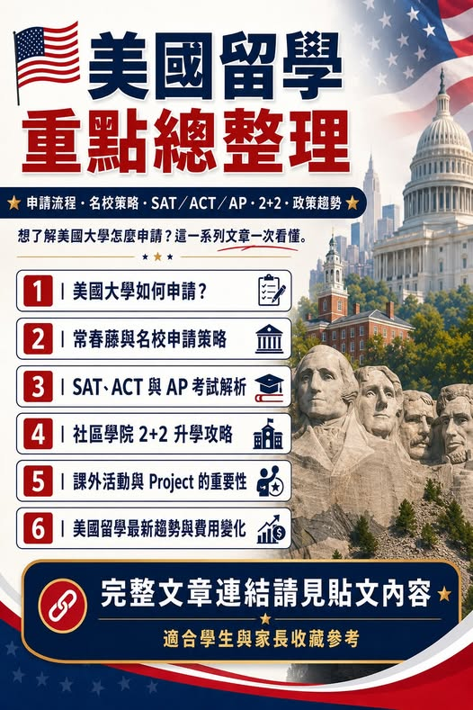

《看懂制度，選對世界》第一集
美國留學文章總整理：申請、SAT、AP、2+2 與趨勢
美國留學文章總整理｜申請流程、名校策略、SAT/AP、2+2、留學趨勢一次看

美國留學文章總整理｜申請流程、名校策略、SAT/AP、2+2、留學趨勢一次看
Peter 提供的美國留學懶人包，讀完，你會少踩很多坑。值得收藏~ 想了解美國大學怎麼申請？從申請流程、常春藤名校、SAT / ACT / AP、社區學院 2+2，到課外活動、Project、留學費用與最新政策變化，這一系列文章幫你一次整理美國升學的重要觀念。適合準備美國留學的學生與家長收藏參考 【美國大學如何申請？一次看懂申請流程、特色與「關鍵時間點」】 【給想挑戰 Harvard、Yale、Princeton、Stanford、MIT 的學生與家長】 【什麼是「常春藤名校」？
美國菁英大學體系的起源】 【解讀美國大學入學評量】SAT、ACT 與 AP 考試 【 2+2 升學攻略 【 與 【 １０大最「沒用」科系？】 【 帳單全面墊高：2026 中產家庭要先算生活費，再談名校夢 】 上場後，留美這條路正式進入高壓模式 】 【另類 在美國進不了一流大學？】 SAT 審查】 【2026 春季 美國大學國際學生少了 20%】 2+2 】